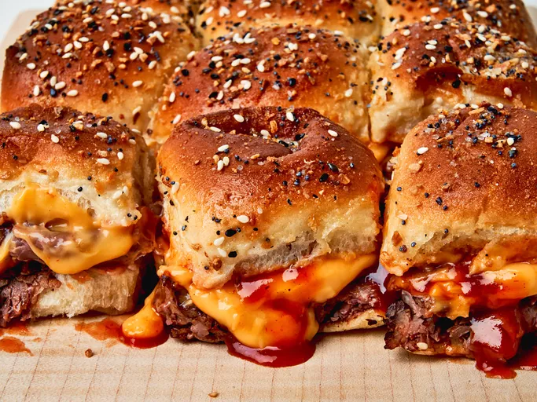

Roast Beef and Cheddar Sliders

Description
These gooey, cheesy, BBQ roast beef sliders are quick and easy to make with just a few simple ingredients.
Listed ingredients can easily be swapped with your favorite toppings for a more personalized meal.
Total prep and bake time: 22 minutes
Ingredients
- 4 tbls. butter (divided/melted)
- 1 package of 12 hawaiian sweet rolls
- 12 oz. deli roast beef
- 1/2 cup of BBQ sauce
- 1 cup of cheddar cheese sauce
- 1/4 tsp. garlic powder
- 1/4 tsp. onion powder
- 2 tsp. everything bagel seasoning
Directions
- Preheat oven to 350 degrees F (175 degrees C). Brush bottom and sides of a 9x13-inch baking dish with melted butter until lightly coated.
- Place bottom half of rolls in baking dish, evenly distribute roast beef, cheese, and drizzle BBQ sauce overtop.
Place top roll halves on top.
- Combine remaining butter with garlic powder and onion powder, brush evenly over bun tops, and top with bagel seasoning.
- Bake until bread is toasted and golden brown, the center is warm and melted. (approx. 10-12 minutes)
Back